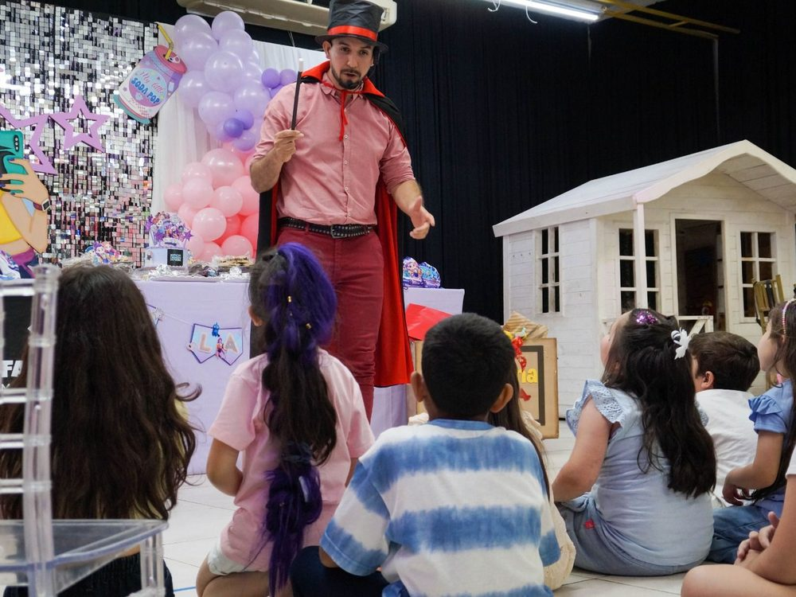
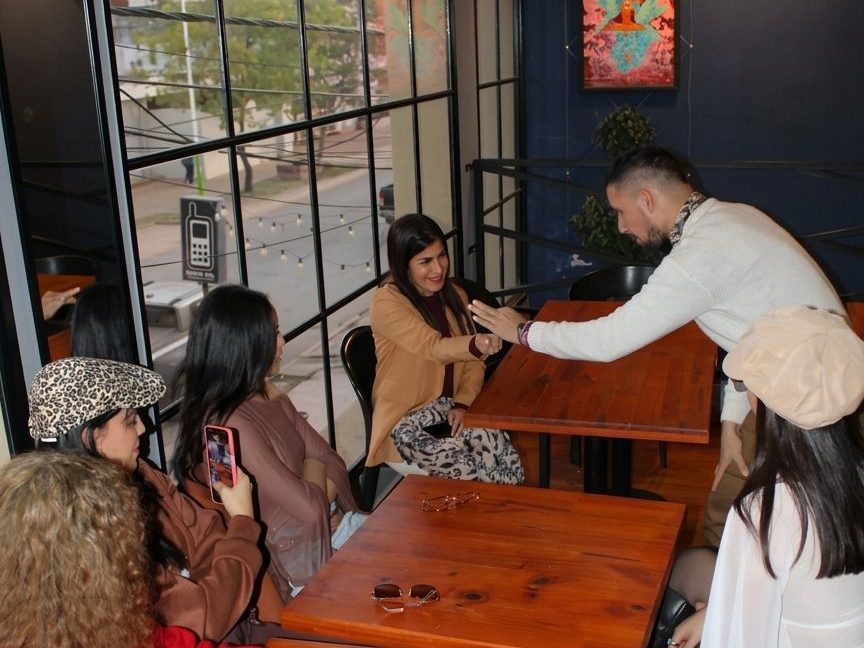

✨
Asombro
Cada show busca despertar la capacidad de maravillarse, como cuando uno era niño.
Servicios
Tres propuestas para que tu evento sea el que todos recuerden.

Para los más chicos
Para los chicos, el show tiene que ser mágico, pero también divertido y cautivador. Adapto cada truco a su edad, con un ambiente lleno de interacción, risas y mucha magia.

Adultos y empresas
Un show visual, cargado de humor, chispa y constante complicidad con el público. Las carcajadas y el asombro se mezclan en una experiencia inolvidable.
Si buscás diversión y que tus invitados hablen del show mucho después de que termine, esta es tu propuesta.

Mesa por mesa
Un mini show de bienvenida en la mesa de tus invitados o en los grupos que van llegando. Es una experiencia cercana: la magia sucede a centímetros de sus ojos y hasta en sus propias manos, con objetos comunes como monedas, cartas y bandas elásticas.
Seis valores que están en cada show.
Cada show busca despertar la capacidad de maravillarse, como cuando uno era niño.
La magia no solo sorprende: también hace reír y genera diversión genuina.
El público no es un espectador pasivo, es protagonista. Hay complicidad, interacción y conexión humana.
Innovo en rutinas, presentaciones y propuestas para que cada show sea único.
Transparencia, organización, seriedad y compromiso en cada evento.
No se trata solo del truco, sino de crear recuerdos inolvidables en familia y con amigos.
Completá el formulario y recibí tu presupuesto online.